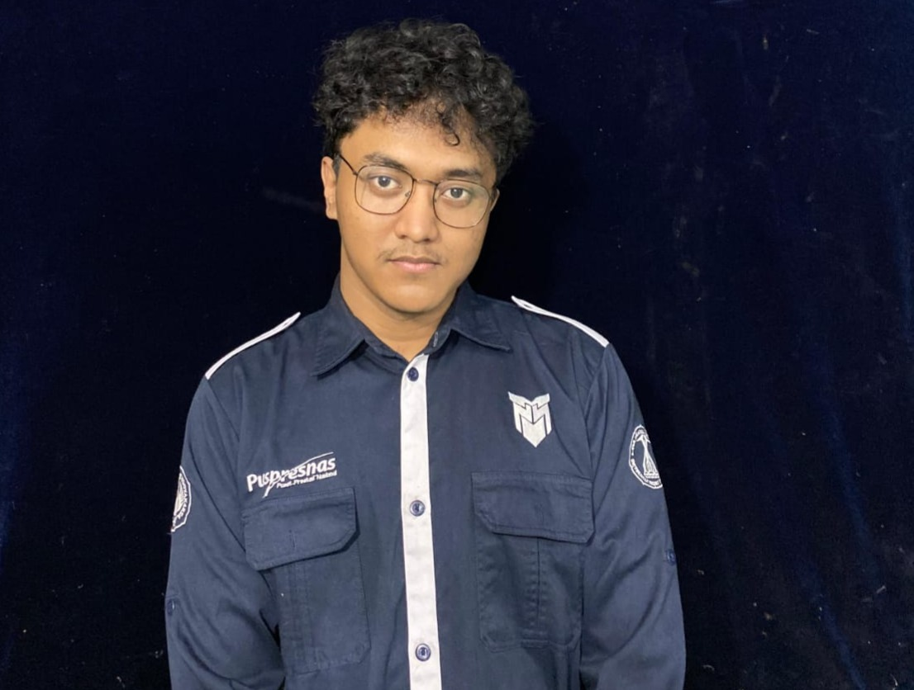

Hello, I'm Wahyu Adji Agus Saputra
I'm a
Hardware Programmer with a deep passion for robotics and machine learning.
About Me

Hardware Programmer & AI Enthusiast
I am a dedicated student in the Mechatronics Engineering Education program at Yogyakarta State University with hands-on experience as a Hardware Programmer for a competitive robotics team. Beyond my core curriculum, I am passionate about furthering my expertise in machine learning through specialized bootcamps and self-directed study, aiming to build robust, intelligent systems from the ground up.
Download CVEducation
Universitas Negeri Yogyakarta (UNY)
Mechatronics Engineering Education (2021 - Present)
As an active team member in the annual Indonesian Robot Contest (KRI), my team has been recognized with multiple awards. I have also engaged in various course projects that closely relate to my mechatronics engineering curriculum.
Professional Experience
Head of Motion Programmer
MOBO-EVO Robotics Team (2022 - 2023)
Served as the Coordinator for the Motion Programmer division, where I managed the complete workflow, from creating the annual program and development schedule to overseeing team progress for one full year.
AI Apprenticeship
Laskar AI
Completed an intensive apprenticeship focused on Artificial Intelligence, gaining practical skills and experience in building and deploying AI models.
Cloud Computing Cohort
AWS re/Start
Participated in the AWS re/Start program, a full-time, classroom-based skills development program that prepares individuals for careers in the cloud.
Robotics Team Member
UNY Robotics Team (2021 - 2024)
For three consecutive years, I have actively participated in national robotics competitions organized by the Indonesian National Achievement Center (PUSPRESNAS).
Projects
IoT Project: Shroomery
Engineered a real-time mushroom monitoring system with automated environmental controls to optimize growth conditions and ensure ideal harvests.
AI Project: SignBridge
Developed an innovative two-way sign language translator that detects both SIBI and BISINDO gestures, converting them into real-time text and audio to bridge communication gaps.
Project: Data Science Dashboard
An interactive dashboard for data analysis visualization.
Project: Performance Monitoring Dashboard
A dashboard to monitor student academic performance.
Honors & Awards
2nd Place Winner, National
Indonesian Robot Contest (KRI) 2024, Wheeled Soccer Robot Division.
2nd Place Winner, Regional
Indonesian Robot Contest (KRI) 2024, Wheeled Soccer Robot Division.
2nd Place Winner, National
Indonesian Robot Contest (KRI) 2023, Wheeled Soccer Robot Division.
1st Place Winner, Regional
Indonesian Robot Contest (KRI) 2023, Wheeled Soccer Robot Division.